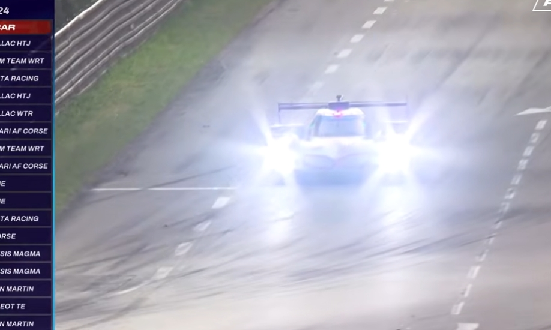
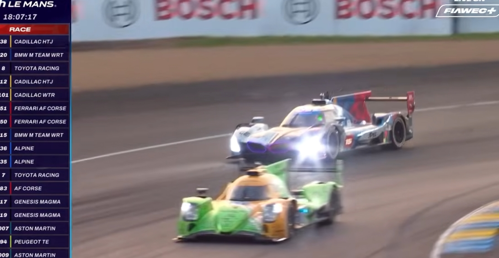
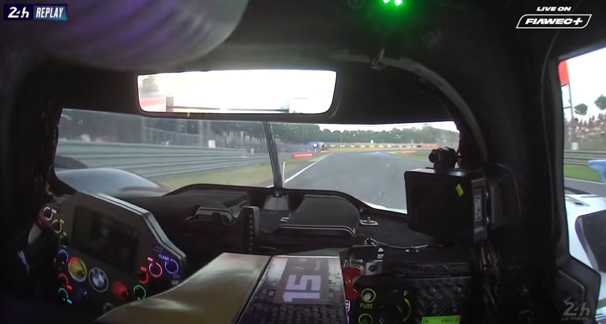
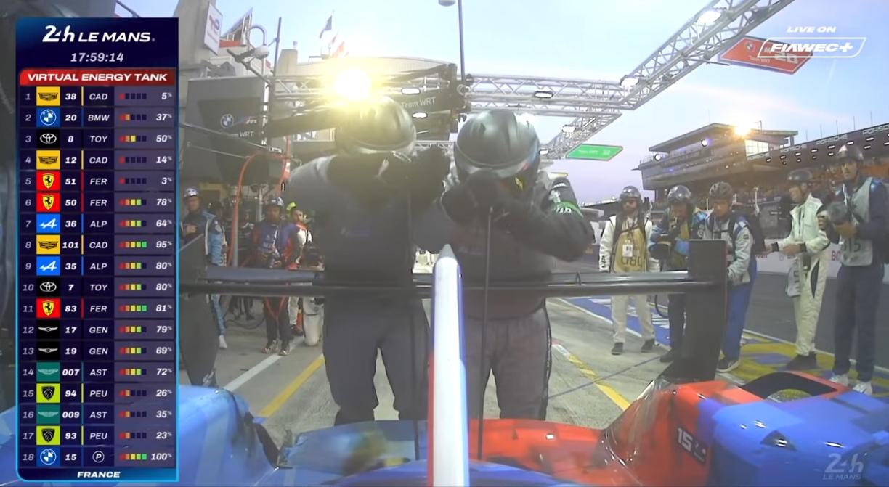
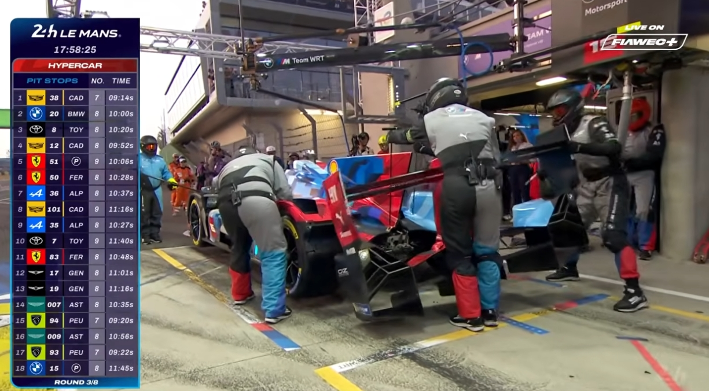
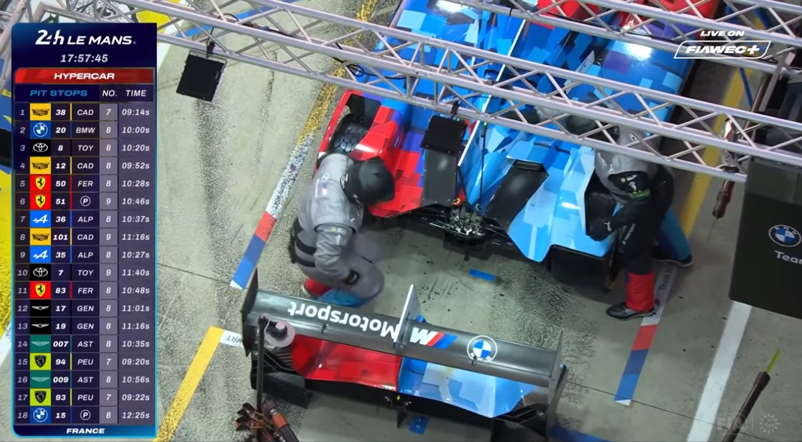
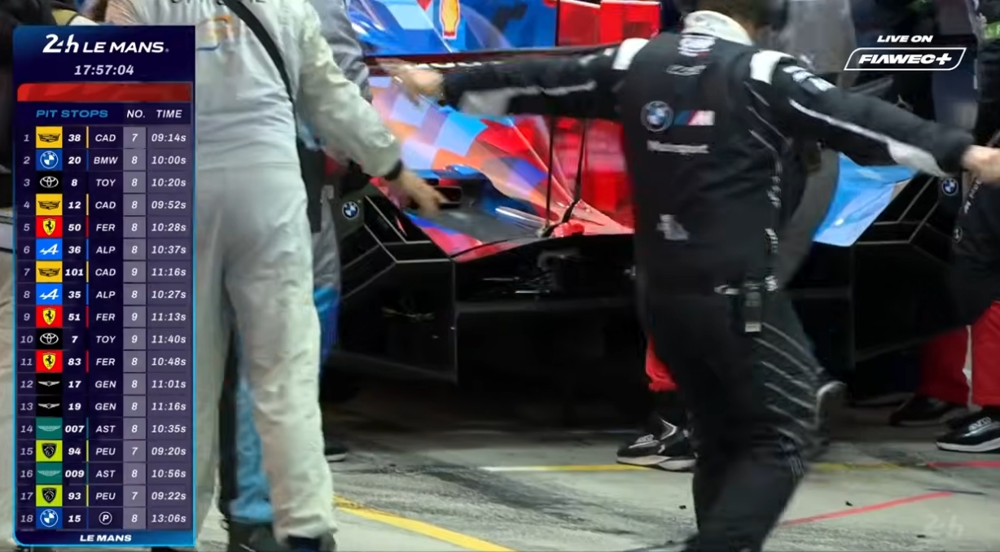
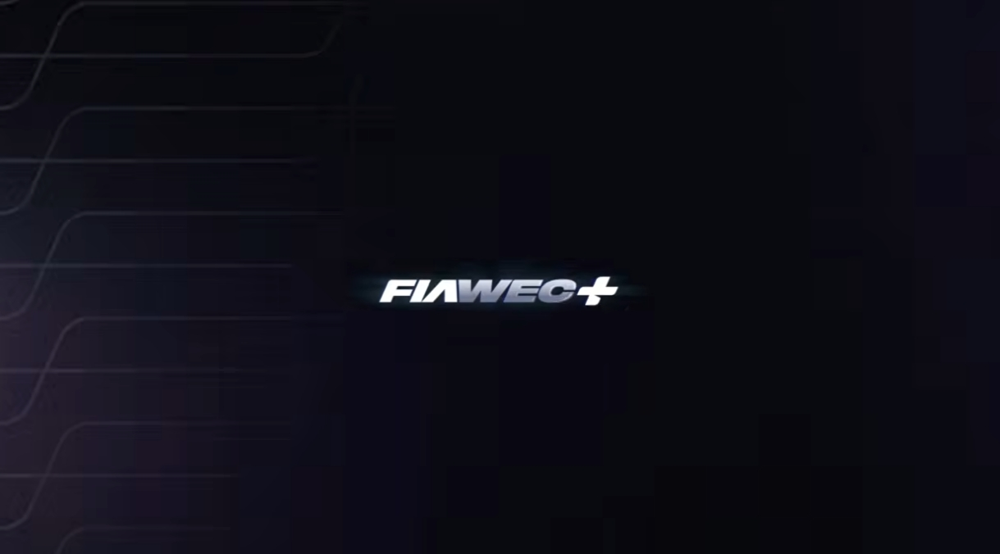
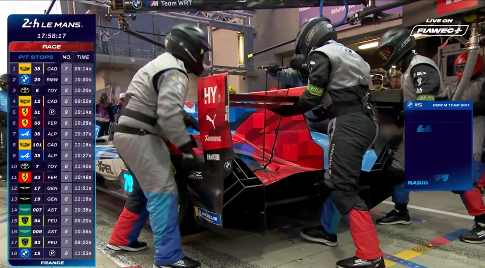

해당 영상은 2025 르망 24시 경기 중 BMW 15번 차량이 포르쉐 커브 구간에서 LMP2 차량과 접촉한 뒤 피트로 돌아오는 과정을 담고 있다. 해설진은 이 장면을 단순한 실수보다 시야, 속도 차, 코너 특성이 겹친 레이싱 상황으로 설명한다.
BMW 15번 차량
- 팀: BMW M Team WRT
- 차량: BMW M Hybrid V8
- 클래스: Hypercar, LMDh 규정 기반 하이브리드 프로토타입
- 제조/개발: BMW M, 섀시 파트너 Dallara
- 엔진: BMW P66/3 4.0L 터보 V8 하이브리드
상대 LMP2 차량
- 클래스: LMP2
- 차종: 르망 2025 LMP2 엔트리는 Oreca 07-Gibson 기반
- 제조사: Oreca 섀시, Gibson V8 엔진
- 주의: 캡처와 대본만으로는 접촉한 LMP2의 번호와 드라이버를 확정하기 어렵다.
BMW 15번 드라이버
- Kevin Magnussen, 1992년 10월 5일생, 2025년 르망 기준 32세
- Raffaele Marciello, 1994년 12월 17일생, 2025년 르망 기준 30세
- Dries Vanthoor, 1998년 4월 20일생, 2025년 르망 기준 27세
장면 속 핵심 상황
- 대본상 사고 당시 주행자는 Dries Vanthoor로 들리며, 이후 Kevin Magnussen으로 드라이버 교체 지시가 나온다.
- 왼쪽 중계 그래픽에는 Ferrari, BMW, Toyota, Cadillac, Alpine, Aston Martin, Peugeot 같은 Hypercar 제조사가 함께 보인다.
- 이 글의 나이는 2025년 6월 르망 경기 시점 기준이다.
접촉은 작아 보였지만 결과는 컸다
초반 해설의 핵심은 “15번의 잘못만으로 보기 어렵다”는 점이다. LMP2 차량이 평소 라인을 따라 들어오고, BMW는 그 옆을 지나가려 했지만 서로의 위치가 완전히 보이지 않았던 상황으로 읽힌다. 포르쉐 커브처럼 빠르고 흐름이 중요한 구간에서는 이런 반 박자의 시야 차이가 바로 손상으로 이어진다.

문제는 접촉 위치였다. 해설에 따르면 앞쪽 스플리터나 휠 아치가 상대 차량의 타이어 쪽을 잡아 뜯는 전형적인 손상 패턴에 가깝다. 차체가 크게 밀려난 장면보다 타이어와 바디워크가 찢기는 순간이 더 치명적이었다.

세 바퀴로 돌아와야 하는 악몽
팀 라디오는 “세 바퀴만 남았다. 안전하게 멈춰라”는 취지로 상황을 정리한다. 펑크가 난 상태에서 피트까지 돌아오는 일은 단순한 감속이 아니다. 타이어가 무너지며 차체와 서스펜션, 구동계에 추가 충격을 줄 수 있다.

해설진은 이런 충격이 드라이브샤프트, 피니언, 파이널 드라이브 같은 부품에 장기적인 영향을 줄 수 있다고 말한다. 겉보기에는 타이어와 바디워크 문제처럼 보여도, 실제로는 구동계 전체를 의심해야 하는 상황이다.
피트에서 드러난 추가 손상
BMW 15번 차량은 피트에서 리어 바디 섹션을 제거하고 교체하려 하지만, 작업이 쉽게 진행되지 않는다. 해설은 후방 충격이 뒤쪽으로 전달되며 바디워크가 타이어를 찢었고, 테일 섹션 장착 지점이나 기어박스 케이싱 쪽 핀이 손상됐을 가능성을 언급한다.

여기서 흥미로운 대목은 트랙션 컨트롤 이야기다. 타이어가 하나 빠진 상태에서는 전자장비가 비정상적인 슬립으로 판단해 차를 붙잡을 수 있다. 그래서 라디오에서는 특정 모드와 TC 설정을 바꾸라는 지시가 오간다.

왜 이 장면이 르망다운가
르망은 빠른 차와 느린 차가 같은 트랙을 공유한다. LMP2와 GT 계열 차량이 코너에서 비슷한 속도로 만나는 순간, 추월하는 쪽도 추월당하는 쪽도 완벽한 확신을 갖기 어렵다. 이 장면은 그 복잡한 공존의 위험을 보여준다.

해설진이 계속 “보이지 않았다”, “일반적인 라인이었다”, “경험 많은 LMP2 드라이버의 인지가 필요했다”고 말하는 이유도 여기에 있다. 모터스포츠에서 사고 원인은 한 사람의 실수보다, 서로 다른 속도와 시야가 겹친 결과인 경우가 많다.

결국 이 장면은 포르쉐 커브의 위험성과 내구레이스의 냉정함을 동시에 보여준다. 한 번의 펑크는 한 바퀴를 망치고, 한 번의 바디워크 손상은 피트 작업 전체를 어렵게 만들며, 그 사이 경쟁자들은 계속 달린다.


전체 글 요약
BMW 15번 차량은 포르쉐 커브에서 LMP2 차량과 접촉하며 펑크와 후방 손상을 입었다. 피트에서는 타이어 교체를 넘어 리어 바디, 엔진 커버, 장착부 문제까지 확인해야 했고, 이 장면은 르망 24시에서 작은 접촉이 얼마나 큰 시간 손실로 이어지는지 보여준다.
관련 검색하기